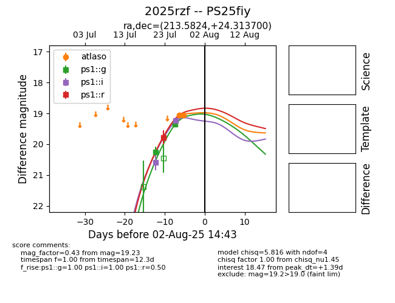

Target 2025rzf at 2025-08-02 14:43, see:
TNS: wis-tns.org/object/2025rzf
YSE: ziggy.ucolick.org/yse/transient_detail/2025rzf
alt names
2025rzf (yse,tns)
PS25fiy (panstarrs)
coordinates:
equatorial (ra, dec) = (213.5824,+24.31370)
galactic (l, b) = (28.9902,+71.14170)
photometry
last atlaso=19.06, ps1::g=19.36, ps1::i=19.23, ps1::r=19.78
2 atlaso, 2 ps1::g, 2 ps1::i, 1 ps1::r detections
